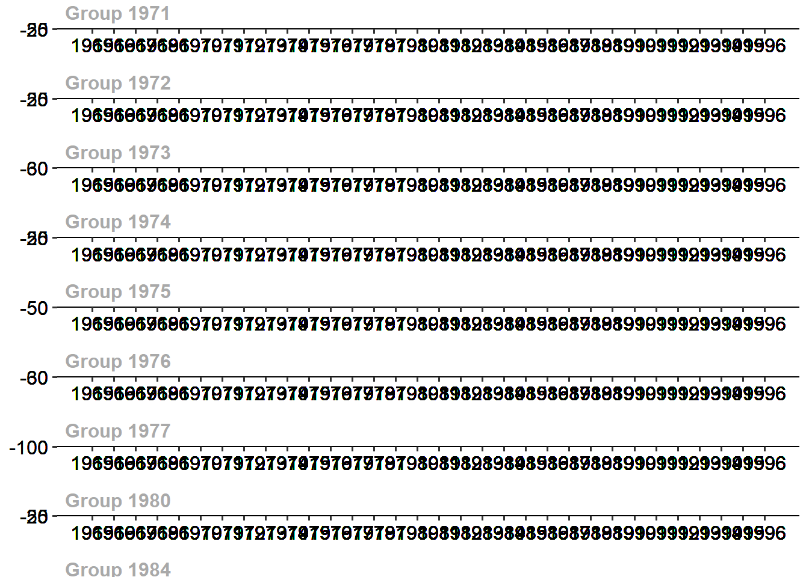
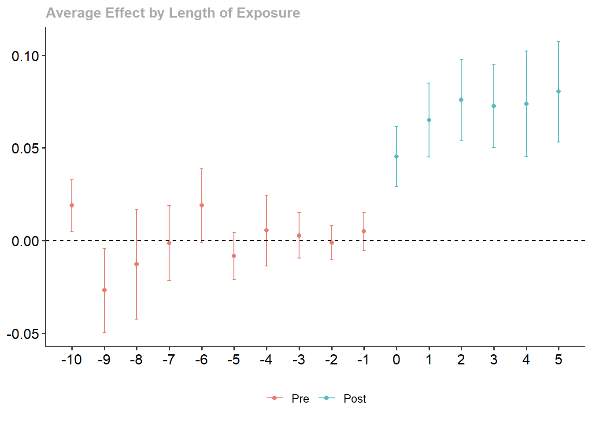
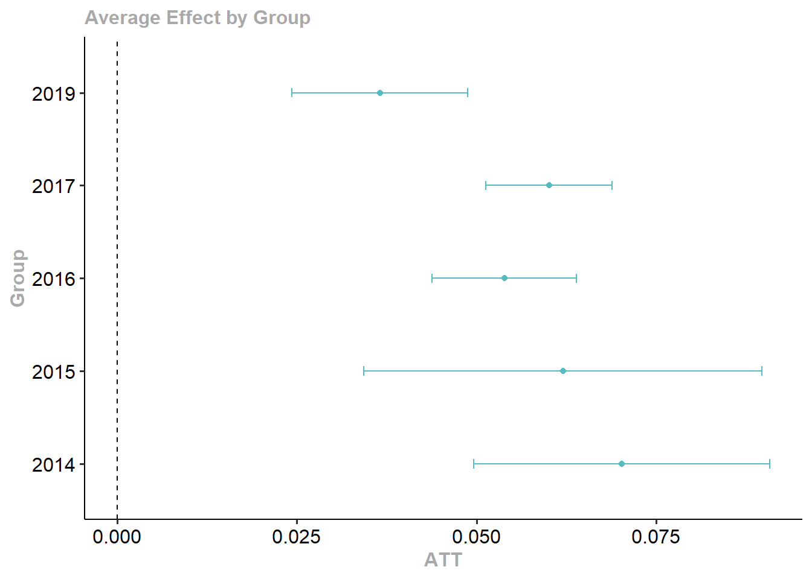
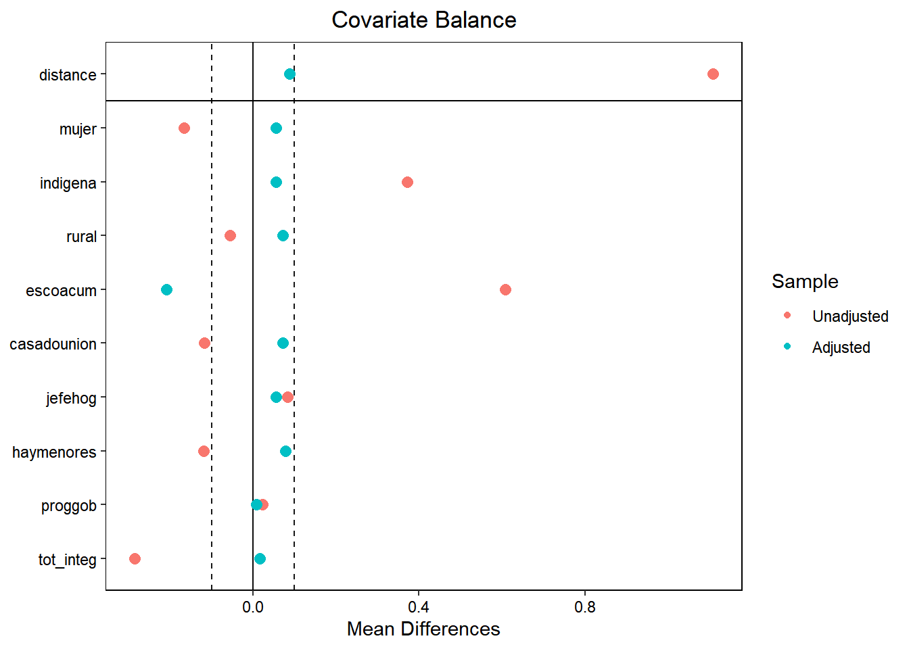

wd <- divorce %>%
filter(year>=1964 & year<=1996 & sex==2) %>%
mutate(suicide_rate=suicide*1000000/(stpop*fshare),
year=as.numeric(year),
divyear = ifelse(divyear>1996, Inf, divyear),
unilateral=ifelse(year>divyear, 1, 0))Respuestas a la tarea 3
Respuestas
Pregunta 1
Stevenson, B. & Wolfers, J. (2006)1 estudian los efectos de la introducción de leyes que permiten el divorcio unilateral en los Estados Unidos. La librería bacondecomp incluye los datos usados en dicho artículo (debe instalar y cargar la librería). Usaremos los datos de 1964 a 1996 para mostrar cómo impactan las leyes de divorcio express (unilateral) a la tasa de suicidios en mujeres.
Al correr el pedazo de código anterior, obtendrá un objeto de datos wd en donde la variable de impacto es la tasa de suicidios en mujeres, suicide_rate, st identifica a los estados, year identifica a los años y divyear es el año en que se introdujo la legislación del divorcio unilateral. La última fila del código crea el indicador de tratamiento unilaterial, que toma el valor de 1 para los estados tratados en los periodos post tratamiento.
[5 puntos] Presente una tabla donde muestre el número de estados que es tratado en cada periodo del panel. ¿Cuántos estados son nunca tratados? ¿Cuántos estados son siempre tratados?
Si hacemos un tabulado de divyear para un año fijo, notamos cuántos estados se vuelven tratados en cada año. Solo 5 estados son nunca tratados. Por otro lado, como el panel comienza en 1964 y hay 9 estados tratados en 1950, estos 9 estados son siempre tratados.
table(filter(wd, year==1996)$divyear)1950 1969 1970 1971 1972 1973 1974 1975 1976 1977 1980 1984 1985 Inf 9 2 2 7 3 11 3 2 1 3 1 1 1 5[5 puntos] Como punto de partida, estime el efecto del tratamiento sobre suicide_rate usando efectos fijos por estado y año (TWFE) y empleando una librería específica para efectos fijos, como felm. Tome en cuenta la agrupación de los errores. Interprete sus resultados.
Usando felm podemos incorporar ya el nivel de agrupación de los errores:
summary(felm(suicide_rate ~ unilateral | st + year | 0 | st, data = wd))Call: felm(formula = suicide_rate ~ unilateral | st + year | 0 | st, data = wd) Residuals: Min 1Q Median 3Q Max -37.517 -6.157 -0.141 5.577 57.004 Coefficients: Estimate Cluster s.e. t value Pr(>|t|) unilateral -3.777 2.201 -1.716 0.0923 . --- Signif. codes: 0 '***' 0.001 '**' 0.01 '*' 0.05 '.' 0.1 ' ' 1 Residual standard error: 10.85 on 1599 degrees of freedom Multiple R-squared(full model): 0.6844 Adjusted R-squared: 0.668 Multiple R-squared(proj model): 0.007963 Adjusted R-squared: -0.04353 F-statistic(full model, *iid*):41.77 on 83 and 1599 DF, p-value: < 2.2e-16 F-statistic(proj model): 2.945 on 1 and 50 DF, p-value: 0.09231[5 puntos] Compruebe que puede obtener el mismo resultado con una regresión lineal usando el paquete lm e incluyendo, además de la variable de tratamiento, dummies de estado y de año.
Estimamos con dummies:
summary(m1 <- lm(suicide_rate ~ unilateral + factor(st) + factor(year), data = wd))$coef[1:2,1:3]Estimate Std. Error t value (Intercept) 56.732642 2.468251 22.984953 unilateral -3.776552 1.054148 -3.582562Luego estimamos errores agrupados:
modelsummary(list(m1), output = 'gt', vcov=clubSandwich::vcovCR(m1, type='CR1', cluster=wd$st), coef_map = "unilateral", gof_map = "nobs")(1) unilateral -3.777 (2.200) Num.Obs. 1683 Obtenemos los mismos coeficientes. Aquí también podrán volver a comprobar la importancia de usar errores agrupados. El error agrupado es más de dos veces más grande que el error clásico.
[10 puntos] Ahora muestre que podemos obtener el coeficiente de TWFE a partir de una regresión bivariada entre la tasa de suicidios y unilateral, una vez purgada por efectos fijos. Para ello, primero estime una regresión de unilateral en función de los efectos fijos. Obtenga la predicción y luego defina una nueva variable igual a la diferencia entre unilateral y la predicción que acaba de obtener. Finalmente, obtenga el coeficiente de TWFE con una regresión de la tasa de suicidios en función de la diferencia antes definida.
Corremos la primera regresión para purgar los efectos fijos:
d1 <- lm(unilateral ~ factor(st) + factor(year), data = wd)Definimos la nueva variable:
wd <- wd %>% mutate(unilateral_hat = unilateral-predict(d1))Y finalmente estimamos:
summary(m2 <- lm(suicide_rate ~ unilateral_hat, data = wd))$coef[1:2,1:3]Estimate Std. Error t value (Intercept) 54.422503 0.4585884 118.673960 unilateral_hat -3.776552 1.8276582 -2.066334Obtenemos el mismo coeficiente. Frisch–Waugh–Lovell tenían razón.
[10 puntos] Realice la descomposición de Goodman-Bacon (2021). Construya un gráfico donde muestre en el eje \(x\) el peso otorgado a cada comparación 2x2 que el estimador de TWFE realiza mecánicamente y en el eje \(y\) el efecto estimado correspondiente a cada comparación. Interprete el gráfico obtenido.
Como vimos en laboratorio, la descomposición de Bacon se puede obtener con la función bacon:
#Goodman-Bacon decomposition df_bacon <- bacon(suicide_rate ~ unilateral, data = wd, id_var = "st", time_var = "year")type weight avg_est 1 Earlier vs Later Treated 0.11558 0.13489 2 Later vs Always Treated 0.41990 -6.95245 3 Later vs Earlier Treated 0.23125 2.33743 4 Treated vs Untreated 0.23328 -6.05881coef_bacon <- sum(df_bacon$estimate * df_bacon$weight) print(paste("Suma ponderada de la descomposición =", round(coef_bacon, 4)))[1] "Suma ponderada de la descomposición = -3.7766"twfe <- felm(suicide_rate ~ unilateral | st + year | 0 | st, data = wd) #Gráfico---- df_bacon %>% ggplot(aes(x=weight, y=estimate, shape=type)) + geom_point() + geom_hline(yintercept = round(twfe$coefficients, 4))Las comparaciones que más pesan en el estimador de efectos fijos son las de estados tratados con los que siempre estuvieron tratados en el panel, recibiendo dos de esas comparaciones alrededor de 13 y el 7% del peso (los dos triángulos más hacia la derecha). otra comparación que recibe alrededor de 7% del peso es la de los tratados con los nunca tratados (cruz más hacia la derecha). En total, las comparaciones con los estados que iniciaron siendo tratados se llevan el 42% del peso. Las comparaciones entre los tratados tarde y los tratados temprano también reciben un peso alto de 23%.
[10 puntos] Implemente el estimador de Callaway & Sant’Anna (2021) para estimar los efectos del tratamiento específicos para cada cohorte, usando el paquete did. Utilice como grupo de comparación los estados no tratados aún. La columna stid es un identificador numérico de los estados (lo requerirá cuando use att_gt del paquete did).
atts_nyt <- att_gt(yname = "suicide_rate", tname = "year", idname = "stid", gname = "divyear", data = wd, control_group = "notyettreated", est_method = 'reg', bstrap = TRUE, biters = 1000, print_details = FALSE, panel = TRUE) summary(atts_nyt)Call: att_gt(yname = "suicide_rate", tname = "year", idname = "stid", gname = "divyear", data = wd, panel = TRUE, control_group = "notyettreated", bstrap = TRUE, biters = 1000, est_method = "reg", print_details = FALSE) Reference: Callaway, Brantly and Pedro H.C. Sant'Anna. "Difference-in-Differences with Multiple Time Periods." Journal of Econometrics, Vol. 225, No. 2, pp. 200-230, 2021. <https://doi.org/10.1016/j.jeconom.2020.12.001>, <https://arxiv.org/abs/1803.09015> Group-Time Average Treatment Effects: Group Time ATT(g,t) Std. Error [95% Simult. Conf. Band] 1969 1965 -1.9053 4.8794 -27.0728 23.2622 1969 1966 4.5124 6.3140 -28.0546 37.0794 1969 1967 0.5622 4.9000 -24.7113 25.8358 1969 1968 5.1789 2.9326 -9.9471 20.3050 1969 1969 -0.7447 4.8241 -25.6267 24.1374 1969 1970 -10.2717 7.8061 -50.5345 29.9911 1969 1971 -12.3880 6.6109 -46.4864 21.7105 1969 1972 -4.1259 3.8224 -23.8415 15.5896 1969 1973 1.4524 6.7624 -33.4274 36.3321 1969 1974 -1.4022 4.8595 -26.4669 23.6625 1969 1975 -0.9265 4.2741 -22.9718 21.1188 1969 1976 -12.7344 5.8863 -43.0952 17.6264 1969 1977 -2.3415 8.8846 -48.1674 43.4843 1969 1978 -11.4247 7.5771 -50.5064 27.6570 1969 1979 -6.0427 8.2567 -48.6300 36.5446 1969 1980 -7.9345 5.1363 -34.4268 18.5577 1969 1981 -1.7430 9.1151 -48.7579 45.2719 1969 1982 -6.7020 7.6463 -46.1406 32.7366 1969 1983 4.7154 9.6443 -45.0288 54.4596 1969 1984 -9.5175 11.6932 -69.8297 50.7947 1969 1985 5.9598 15.1784 -72.3288 84.2484 1969 1986 -8.5962 10.9669 -65.1625 47.9701 1969 1987 -8.6897 7.1167 -45.3967 28.0173 1969 1988 -11.9815 8.1066 -53.7944 29.8315 1969 1989 -5.9781 14.2683 -79.5724 67.6163 1969 1990 -7.7327 10.7129 -62.9888 47.5234 1969 1991 -14.7659 10.3482 -68.1405 38.6087 1969 1992 -6.6956 5.8571 -36.9061 23.5149 1969 1993 0.5290 11.2436 -57.4644 58.5223 1969 1994 -6.1575 15.1239 -84.1650 71.8499 1969 1995 -6.7870 16.2961 -90.8403 77.2664 1969 1996 3.0338 13.0924 -64.4951 70.5627 1970 1965 2.4919 3.2345 -14.1915 19.1754 1970 1966 1.8500 2.9888 -13.5658 17.2659 1970 1967 -2.0438 4.2494 -23.9616 19.8740 1970 1968 -3.7538 7.6674 -43.3016 35.7939 1970 1969 9.0725 3.6693 -9.8532 27.9982 1970 1970 0.3548 4.9086 -24.9634 25.6730 1970 1971 -1.9698 3.4994 -20.0192 16.0796 1970 1972 -1.4067 6.7725 -36.3385 33.5251 1970 1973 -11.2801 3.6819 -30.2708 7.7107 1970 1974 -11.1775 3.3614 -28.5150 6.1601 1970 1975 -12.0330 6.0758 -43.3711 19.3051 1970 1976 -17.7592 7.6484 -57.2090 21.6906 1970 1977 -16.3994 4.6119 -40.1869 7.3882 1970 1978 -29.1877 11.2091 -87.0031 28.6277 1970 1979 -26.8802 12.0489 -89.0270 35.2666 1970 1980 -39.5660 11.2593 -97.6399 18.5080 1970 1981 -30.0122 11.6053 -89.8711 29.8467 1970 1982 -36.1714 10.2195 -88.8824 16.5395 1970 1983 -31.0969 18.2208 -125.0777 62.8840 1970 1984 -31.4749 19.6588 -132.8727 69.9228 1970 1985 -30.6346 19.3379 -130.3771 69.1078 1970 1986 -37.0754 20.2897 -141.7276 67.5767 1970 1987 -37.6630 22.9968 -156.2781 80.9520 1970 1988 -43.0563 21.5567 -154.2433 68.1307 1970 1989 -45.1314 18.6974 -141.5703 51.3075 1970 1990 -43.1765 21.0074 -151.5305 65.1775 1970 1991 -49.9116 20.9584 -158.0129 58.1897 1970 1992 -50.9515 16.3952 -135.5161 33.6131 1970 1993 -44.5526 22.6533 -161.3956 72.2904 1970 1994 -51.5405 18.3457 -146.1654 43.0843 1970 1995 -48.4108 22.1367 -162.5894 65.7678 1970 1996 -48.0618 21.9354 -161.2023 65.0787 1971 1965 -2.2110 3.6675 -21.1275 16.7056 1971 1966 -5.9450 3.4727 -23.8570 11.9670 1971 1967 6.1535 3.6431 -12.6374 24.9444 1971 1968 5.3039 3.6282 -13.4096 24.0175 1971 1969 -4.8826 3.8522 -24.7519 14.9868 1971 1970 0.5878 5.3357 -26.9330 28.1087 1971 1971 -7.5805 5.9806 -38.4275 23.2665 1971 1972 -11.4260 7.6060 -50.6567 27.8047 1971 1973 -5.8221 8.1843 -48.0359 36.3917 1971 1974 5.7926 5.3030 -21.5599 33.1451 1971 1975 0.0590 5.1650 -26.5816 26.6996 1971 1976 -0.7920 8.0516 -42.3210 40.7371 1971 1977 0.5899 8.0235 -40.7946 41.9744 1971 1978 -9.5946 9.2473 -57.2912 38.1020 1971 1979 -8.8180 6.0856 -40.2070 22.5711 1971 1980 -15.0039 6.5927 -49.0084 19.0005 1971 1981 -6.0810 7.5616 -45.0828 32.9209 1971 1982 -15.5575 9.1434 -62.7180 31.6029 1971 1983 -6.7973 5.7042 -36.2191 22.6245 1971 1984 -8.1090 7.4695 -46.6360 30.4180 1971 1985 -9.3683 8.0363 -50.8184 32.0819 1971 1986 -16.9260 7.0257 -53.1635 19.3115 1971 1987 -12.9962 10.6205 -67.7753 41.7830 1971 1988 -14.6487 8.2179 -57.0358 27.7384 1971 1989 -18.7126 8.5292 -62.7050 25.2799 1971 1990 -17.6198 6.2034 -49.6162 14.3766 1971 1991 -17.2789 8.0302 -58.6975 24.1397 1971 1992 -22.1825 9.6477 -71.9444 27.5795 1971 1993 -9.1278 8.9309 -55.1922 36.9366 1971 1994 -13.7091 8.6452 -58.3000 30.8818 1971 1995 -15.3270 6.8391 -50.6023 19.9482 1971 1996 -11.2124 8.1337 -53.1651 30.7403 1972 1965 1.9641 1.8568 -7.6132 11.5414 1972 1966 2.3826 6.0672 -28.9113 33.6764 1972 1967 -3.8865 6.0738 -35.2144 27.4414 1972 1968 7.6954 2.8517 -7.0134 22.4041 1972 1969 -8.7084 3.0523 -24.4516 7.0348 1972 1970 0.1004 2.4129 -12.3452 12.5461 1972 1971 1.1463 3.6075 -17.4609 19.7535 1972 1972 -4.8115 4.8223 -29.6844 20.0614 1972 1973 -2.3073 6.4265 -35.4542 30.8397 1972 1974 0.7950 5.0752 -25.3822 26.9721 1972 1975 -2.8930 4.6484 -26.8686 21.0827 1972 1976 -2.9838 10.0952 -55.0537 49.0861 1972 1977 2.8759 5.7347 -26.7031 32.4550 1972 1978 -13.9499 6.9580 -49.8384 21.9385 1972 1979 -4.7118 9.8402 -55.4664 46.0427 1972 1980 -9.9424 7.0336 -46.2210 26.3362 1972 1981 0.7622 6.6577 -33.5774 35.1019 1972 1982 -5.7949 7.6704 -45.3580 33.7681 1972 1983 -2.5286 7.7395 -42.4482 37.3911 1972 1984 -5.7192 8.3375 -48.7229 37.2844 1972 1985 -8.5492 8.4083 -51.9183 34.8198 1972 1986 -3.2909 6.6061 -37.3645 30.7827 1972 1987 -14.5853 8.3274 -57.5371 28.3665 1972 1988 -12.6795 6.8861 -48.1974 22.8384 1972 1989 -10.9845 7.2453 -48.3551 26.3862 1972 1990 -7.7794 7.4263 -46.0832 30.5244 1972 1991 -13.7033 5.7583 -43.4040 15.9975 1972 1992 -11.0100 9.2644 -58.7949 36.7749 1972 1993 -17.3770 7.6351 -56.7581 22.0041 1972 1994 -16.6543 7.8108 -56.9418 23.6331 1972 1995 -16.0626 6.7463 -50.8592 18.7339 1972 1996 -13.6292 5.4833 -41.9112 14.6529 1973 1965 -1.6544 3.3804 -19.0903 15.7815 1973 1966 -3.5308 3.9066 -23.6806 16.6190 1973 1967 5.5388 5.4043 -22.3360 33.4137 1973 1968 -4.1286 5.3098 -31.5158 23.2586 1973 1969 1.9470 4.0250 -18.8136 22.7076 1973 1970 0.3836 5.1956 -26.4148 27.1821 1973 1971 -0.4064 6.4848 -33.8542 33.0414 1973 1972 -0.7103 6.2783 -33.0933 31.6727 1973 1973 9.0122 6.1664 -22.7936 40.8180 1973 1974 7.0826 6.1328 -24.5494 38.7147 1973 1975 8.7932 9.0115 -37.6868 55.2733 1973 1976 5.5815 6.8117 -29.5524 40.7154 1973 1977 9.2638 6.8373 -26.0020 44.5296 1973 1978 -2.8479 7.6933 -42.5289 36.8330 1973 1979 3.5441 7.4379 -34.8199 41.9082 1973 1980 -3.7998 8.1261 -45.7131 38.1136 1973 1981 3.7874 8.4392 -39.7409 47.3156 1973 1982 -2.3342 8.8696 -48.0828 43.4144 1973 1983 0.3746 7.3048 -37.3027 38.0520 1973 1984 -4.0602 8.9285 -50.1125 41.9921 1973 1985 -3.3503 7.5149 -42.1115 35.4109 1973 1986 -9.9416 4.7749 -34.5703 14.6870 1973 1987 -10.5611 8.4821 -54.3109 33.1887 1973 1988 -13.3770 9.3811 -61.7636 35.0096 1973 1989 -9.7072 7.2653 -47.1808 27.7664 1973 1990 -12.5464 5.9227 -43.0949 18.0020 1973 1991 -15.9396 7.3218 -53.7048 21.8257 1973 1992 -17.9985 7.3796 -56.0615 20.0645 1973 1993 -13.8426 7.8772 -54.4722 26.7870 1973 1994 -9.0985 5.9848 -39.9676 21.7707 1973 1995 -12.4104 3.9224 -32.6420 7.8211 1973 1996 -14.4985 5.4998 -42.8659 13.8689 1974 1965 -3.4980 4.2637 -25.4895 18.4935 1974 1966 4.0405 5.6855 -25.2845 33.3655 1974 1967 -2.4469 2.6652 -16.1939 11.3002 1974 1968 -4.1701 5.8251 -34.2156 25.8753 1974 1969 3.0794 2.0588 -7.5398 13.6986 1974 1970 3.9844 2.4875 -8.8458 16.8147 1974 1971 -7.0304 3.0425 -22.7234 8.6625 1974 1972 6.3385 3.5686 -12.0677 24.7448 1974 1973 0.5656 5.2629 -26.5799 27.7111 1974 1974 -2.4409 4.1464 -23.8277 18.9459 1974 1975 1.3647 5.5878 -27.4564 30.1858 1974 1976 -3.5756 5.8710 -33.8578 26.7066 1974 1977 -4.0728 5.7749 -33.8590 25.7134 1974 1978 -8.9231 5.4853 -37.2156 19.3693 1974 1979 -1.7408 5.8760 -32.0487 28.5670 1974 1980 -9.7770 5.2401 -36.8047 17.2507 1974 1981 -2.8322 5.9761 -33.6563 27.9918 1974 1982 -7.4517 5.1983 -34.2637 19.3603 1974 1983 -4.3400 6.7300 -39.0529 30.3728 1974 1984 -7.8279 5.7697 -37.5874 21.9315 1974 1985 0.9048 10.4770 -53.1342 54.9438 1974 1986 -3.4953 8.0411 -44.9706 37.9799 1974 1987 -9.3045 8.2294 -51.7510 33.1419 1974 1988 -9.0434 7.9651 -50.1266 32.0398 1974 1989 -6.4758 8.9473 -52.6251 39.6735 1974 1990 -7.6369 7.6487 -47.0881 31.8143 1974 1991 -14.7133 7.5400 -53.6037 24.1771 1974 1992 -14.7711 7.9284 -55.6651 26.1229 1974 1993 -11.2274 8.1472 -53.2498 30.7949 1974 1994 -14.4350 9.9067 -65.5329 36.6629 1974 1995 -13.4194 9.7474 -63.6956 36.8569 1974 1996 -14.8017 9.1389 -61.9392 32.3359 1975 1965 18.6039 4.0279 -2.1716 39.3793 1975 1966 -3.3872 3.5932 -21.9205 15.1460 1975 1967 -2.4321 2.1565 -13.5552 8.6911 1975 1968 7.3667 4.8712 -17.7582 32.4917 1975 1969 -4.2480 4.9129 -29.5880 21.0921 1975 1970 -11.4912 5.1927 -38.2744 15.2920 1975 1971 5.6632 7.1918 -31.4312 42.7575 1975 1972 -15.6310 6.7487 -50.4402 19.1782 1975 1973 16.2449 6.6177 -17.8883 50.3780 1975 1974 -0.4082 6.0626 -31.6785 30.8621 1975 1975 -2.3510 2.8205 -16.8988 12.1969 1975 1976 -2.3824 5.5227 -30.8679 26.1030 1975 1977 -4.1345 7.3110 -41.8439 33.5750 1975 1978 -7.0822 6.3355 -39.7602 25.5959 1975 1979 -12.0112 9.5629 -61.3355 37.3131 1975 1980 -10.7602 4.9512 -36.2979 14.7774 1975 1981 -7.1236 5.3099 -34.5115 20.2643 1975 1982 -10.5685 7.2137 -47.7760 26.6390 1975 1983 -9.0308 5.8379 -39.1419 21.0804 1975 1984 9.8022 2.8005 -4.6425 24.2468 1975 1985 -5.6163 8.0715 -47.2481 36.0154 1975 1986 -5.2183 4.4220 -28.0264 17.5897 1975 1987 -0.8638 5.2844 -28.1201 26.3926 1975 1988 -15.3668 10.2396 -68.1815 37.4479 1975 1989 -5.4933 5.8172 -35.4980 24.5114 1975 1990 8.5067 4.0466 -12.3650 29.3783 1975 1991 0.7631 5.7141 -28.7096 30.2358 1975 1992 -4.2255 6.0728 -35.5481 27.0971 1975 1993 1.1200 2.3651 -11.0789 13.3188 1975 1994 -8.3655 7.3858 -46.4607 29.7298 1975 1995 1.8041 3.8179 -17.8882 21.4964 1975 1996 -6.9207 5.2975 -34.2446 20.4032 1976 1965 -11.0522 1.6328 -19.4738 -2.6306 * 1976 1966 0.1018 2.1017 -10.7385 10.9420 1976 1967 -5.9143 2.1523 -17.0156 5.1869 1976 1968 -1.6479 2.0014 -11.9709 8.6751 1976 1969 -6.6407 1.8190 -16.0229 2.7414 1976 1970 8.5784 1.9110 -1.2781 18.4349 1976 1971 4.0973 2.5541 -9.0765 17.2711 1976 1972 -0.9903 2.6282 -14.5460 12.5654 1976 1973 -20.1263 3.7419 -39.4264 -0.8261 * 1976 1974 39.6133 2.4531 26.9606 52.2660 * 1976 1975 -3.5747 2.8072 -18.0537 10.9043 1976 1976 3.7698 5.3176 -23.6576 31.1972 1976 1977 33.5942 4.9442 8.0927 59.0958 * 1976 1978 -3.1195 2.4444 -15.7276 9.4886 1976 1979 1.3342 7.2019 -35.8124 38.4808 1976 1980 -10.4124 3.5201 -28.5687 7.7438 1976 1981 -10.4368 5.5342 -38.9817 18.1081 1976 1982 -12.4922 3.3785 -29.9180 4.9335 1976 1983 -15.8081 6.3242 -48.4275 16.8113 1976 1984 -20.6870 3.5593 -39.0456 -2.3284 * 1976 1985 -0.2053 11.1969 -57.9574 57.5468 1976 1986 -27.7992 6.7668 -62.7015 7.1032 1976 1987 -9.9985 4.4562 -32.9829 12.9860 1976 1988 -22.8540 6.0525 -54.0724 8.3643 1976 1989 -14.3020 6.6385 -48.5426 19.9386 1976 1990 -16.7275 4.8656 -41.8235 8.3685 1976 1991 -29.9838 4.5513 -53.4589 -6.5088 * 1976 1992 -35.9431 5.7307 -65.5013 -6.3848 * 1976 1993 -33.5630 6.2298 -65.6958 -1.4302 * 1976 1994 -19.1785 10.5128 -73.4022 35.0451 1976 1995 -18.8943 8.2240 -61.3125 23.5240 1976 1996 -20.0712 6.6663 -54.4552 14.3128 1977 1965 6.8982 11.6793 -53.3423 67.1388 1977 1966 -11.1214 8.3309 -54.0914 31.8486 1977 1967 10.8566 5.8578 -19.3573 41.0706 1977 1968 -11.0425 11.5132 -70.4262 48.3411 1977 1969 10.1932 12.3668 -53.5934 73.9797 1977 1970 2.9004 6.0733 -28.4251 34.2258 1977 1971 3.0530 8.9256 -42.9841 49.0902 1977 1972 -0.6535 9.5351 -49.8342 48.5272 1977 1973 3.1405 8.7360 -41.9186 48.1997 1977 1974 -14.4506 6.3095 -46.9944 18.0931 1977 1975 -0.1240 5.1773 -26.8282 26.5802 1977 1976 5.5263 17.8595 -86.5910 97.6435 1977 1977 -0.1462 15.3952 -79.5530 79.2605 1977 1978 -17.4422 17.3103 -106.7270 71.8426 1977 1979 -7.6652 27.3828 -148.9027 133.5722 1977 1980 -12.0752 23.5776 -133.6857 109.5354 1977 1981 -11.8110 21.3501 -121.9323 98.3103 1977 1982 -18.5556 16.0724 -101.4553 64.3442 1977 1983 4.2551 29.3160 -146.9534 155.4636 1977 1984 -3.0226 23.0968 -122.1531 116.1079 1977 1985 -14.8995 21.4414 -125.4921 95.6930 1977 1986 -12.3230 13.0660 -79.7160 55.0701 1977 1987 -23.6769 27.0571 -163.2344 115.8805 1977 1988 -25.5547 22.5961 -142.1030 90.9936 1977 1989 -9.2602 29.8080 -163.0065 144.4860 1977 1990 -13.7369 28.7220 -161.8817 134.4079 1977 1991 -25.9731 24.2211 -150.9027 98.9564 1977 1992 -29.9220 22.6140 -146.5625 86.7185 1977 1993 -14.9531 26.3637 -150.9340 121.0279 1977 1994 -11.6033 33.8256 -186.0717 162.8650 1977 1995 -29.0098 21.2338 -138.5313 80.5117 1977 1996 -16.0590 21.8677 -128.8501 96.7321 1980 1965 -4.7817 1.6478 -13.2808 3.7173 1980 1966 -2.0295 2.0806 -12.7609 8.7019 1980 1967 0.2462 2.1417 -10.8004 11.2929 1980 1968 4.9725 2.0004 -5.3451 15.2901 1980 1969 -5.6981 1.8280 -15.1264 3.7303 1980 1970 7.6920 1.8762 -1.9854 17.3694 1980 1971 -9.5134 2.5284 -22.5548 3.5281 1980 1972 5.9170 2.6066 -7.5276 19.3616 1980 1973 -3.6509 3.7905 -23.2018 15.8999 1980 1974 1.1846 4.2305 -20.6360 23.0052 1980 1975 -1.4249 2.8618 -16.1858 13.3360 1980 1976 1.5220 5.8908 -28.8623 31.9062 1980 1977 -1.8998 2.6630 -15.6352 11.8356 1980 1978 -6.1099 5.3870 -33.8952 21.6754 1980 1979 6.0177 7.9308 -34.8886 46.9240 1980 1980 -11.0694 5.0362 -37.0455 14.9067 1980 1981 -7.3267 2.3732 -19.5675 4.9142 1980 1982 -9.2663 9.2350 -56.8993 38.3668 1980 1983 1.6316 3.2314 -15.0355 18.2987 1980 1984 -2.4538 4.7946 -27.1838 22.2761 1980 1985 4.4467 4.7848 -20.2330 29.1263 1980 1986 -9.5981 7.0565 -45.9946 26.7984 1980 1987 -10.0537 11.3335 -68.5107 48.4033 1980 1988 -10.9789 9.1300 -58.0703 36.1125 1980 1989 -6.9527 5.4821 -35.2288 21.3235 1980 1990 -5.3312 6.2450 -37.5421 26.8797 1980 1991 -8.8820 7.9543 -49.9096 32.1456 1980 1992 -12.0023 8.8737 -57.7718 33.7672 1980 1993 -8.3192 7.7315 -48.1972 31.5588 1980 1994 -12.5474 6.2922 -45.0020 19.9072 1980 1995 -6.7308 8.1776 -48.9100 35.4484 1980 1996 -9.1678 6.3691 -42.0191 23.6834 1984 1965 2.2727 1.5978 -5.9686 10.5139 1984 1966 -1.6070 2.0659 -12.2624 9.0484 1984 1967 -1.8538 2.1457 -12.9212 9.2136 1984 1968 -1.3557 2.0060 -11.7023 8.9909 1984 1969 2.1619 1.8053 -7.1495 11.4733 1984 1970 -0.3449 1.8845 -10.0651 9.3752 1984 1971 -10.9305 2.4712 -23.6767 1.8157 1984 1972 5.8536 2.7049 -8.0979 19.8051 1984 1973 -1.9239 3.7756 -21.3981 17.5503 1984 1974 -7.1605 4.3095 -29.3886 15.0676 1984 1975 -1.6437 2.9179 -16.6938 13.4064 1984 1976 5.6685 5.7622 -24.0524 35.3893 1984 1977 3.2342 2.6166 -10.2620 16.7303 1984 1978 -7.3151 5.3341 -34.8277 20.1975 1984 1979 1.9466 8.1729 -40.2082 44.1014 1984 1980 -8.6205 5.3559 -36.2458 19.0048 1984 1981 10.4692 4.7229 -13.8912 34.8295 1984 1982 -5.4364 7.9954 -46.6757 35.8028 1984 1983 12.0264 8.3679 -31.1343 55.1872 1984 1984 -0.7730 2.6074 -14.2218 12.6758 1984 1985 4.0744 3.7424 -15.2286 23.3773 1984 1986 -8.0341 2.8724 -22.8496 6.7815 1984 1987 -10.4189 8.0305 -51.8391 31.0013 1984 1988 -7.8277 5.4597 -35.9880 20.3327 1984 1989 -9.2894 3.8762 -29.2824 10.7037 1984 1990 -6.2529 2.9419 -21.4271 8.9212 1984 1991 -10.1584 4.5533 -33.6438 13.3270 1984 1992 -11.4694 4.6630 -35.5207 12.5818 1984 1993 -9.2844 4.4284 -32.1257 13.5568 1984 1994 -14.6630 5.2893 -41.9445 12.6186 1984 1995 -12.5044 3.7261 -31.7232 6.7143 1984 1996 -10.2449 3.1374 -26.4271 5.9374 1985 1965 -4.3499 1.5872 -12.5367 3.8368 1985 1966 37.6989 1.8925 27.9376 47.4602 * 1985 1967 -19.2838 2.1321 -30.2810 -8.2865 * 1985 1968 -4.2545 2.0151 -14.6481 6.1391 1985 1969 10.5295 1.8076 1.2063 19.8527 * 1985 1970 7.2143 1.8948 -2.5587 16.9873 1985 1971 6.9735 2.5046 -5.9451 19.8920 1985 1972 5.8781 2.6222 -7.6471 19.4032 1985 1973 -38.9329 3.0972 -54.9080 -22.9577 * 1985 1974 8.7158 4.2377 -13.1417 30.5733 1985 1975 -7.1533 2.6177 -20.6550 6.3484 1985 1976 -0.8308 5.7886 -30.6878 29.0262 1985 1977 -2.2605 2.6432 -15.8939 11.3730 1985 1978 7.7405 5.5636 -20.9562 36.4372 1985 1979 -4.9814 8.3693 -48.1493 38.1864 1985 1980 2.9209 6.1483 -28.7915 34.6333 1985 1981 -4.4773 5.0164 -30.3513 21.3967 1985 1982 13.7629 8.3806 -29.4632 56.9891 1985 1983 -7.4210 8.8973 -53.3125 38.4704 1985 1984 -5.5493 2.9701 -20.8688 9.7702 1985 1985 11.4728 6.8301 -23.7558 46.7015 1985 1986 10.1715 3.4236 -7.4872 27.8303 1985 1987 17.5291 4.9075 -7.7833 42.8415 1985 1988 -9.6423 3.7230 -28.8448 9.5603 1985 1989 19.8229 5.3527 -7.7858 47.4315 1985 1990 26.2350 2.5434 13.1165 39.3534 * 1985 1991 6.2209 3.5620 -12.1516 24.5934 1985 1992 18.3602 4.8122 -6.4605 43.1808 1985 1993 23.0343 2.8095 8.5432 37.5254 * 1985 1994 15.2612 6.2622 -17.0385 47.5609 1985 1995 15.4633 4.6990 -8.7736 39.7002 1985 1996 26.5282 3.5826 8.0494 45.0070 * --- Signif. codes: `*' confidence band does not cover 0 Control Group: Not Yet Treated, Anticipation Periods: 0 Estimation Method: Outcome Regressionggdid(atts_nyt)
[5 puntos] Reporte los resultados agregados obtenidos a partir del estimador Callaway & Sant’Anna (2021), usando una agregación dinámica que muestre los efectos promedio para cada periodo antes y después del tratamiento. Grafique e interprete los resultados.
Graficamos:
agg.es <- aggte(atts_nyt, type = "dynamic") summary(agg.es)Call: aggte(MP = atts_nyt, type = "dynamic") Reference: Callaway, Brantly and Pedro H.C. Sant'Anna. "Difference-in-Differences with Multiple Time Periods." Journal of Econometrics, Vol. 225, No. 2, pp. 200-230, 2021. <https://doi.org/10.1016/j.jeconom.2020.12.001>, <https://arxiv.org/abs/1803.09015> Overall summary of ATT's based on event-study/dynamic aggregation: ATT Std. Error [ 95% Conf. Int.] -9.628 3.7551 -16.9878 -2.2681 * Dynamic Effects: Event time Estimate Std. Error [95% Simult. Conf. Band] -20 -4.3499 1.7161 -15.8877 7.1878 -19 19.9858 12.7582 -65.7898 105.7613 -18 -10.4454 6.7694 -55.9576 35.0668 -17 -3.0542 1.0395 -10.0428 3.9345 -16 4.5869 4.3226 -24.4748 33.6486 -15 1.5315 3.2660 -20.4267 23.4897 -14 1.5330 2.2696 -13.7257 16.7918 -13 -1.6021 5.3218 -37.3817 34.1776 -12 -1.2353 9.4446 -64.7331 62.2624 -11 -6.1889 4.6883 -37.7094 25.3316 -10 7.0286 5.3878 -29.1945 43.2518 -9 -5.6915 3.1351 -26.7697 15.3866 -8 1.1876 2.2908 -14.2139 16.5891 -7 -0.6219 2.0613 -14.4807 13.2369 -6 1.1581 2.5299 -15.8508 18.1670 -5 -2.9106 2.2104 -17.7717 11.9506 -4 2.9082 1.6064 -7.8922 13.7085 -3 -1.9822 2.6671 -19.9134 15.9491 -2 0.7311 2.7508 -17.7632 19.2253 -1 1.4763 2.3283 -14.1771 17.1296 0 0.5890 2.8227 -18.3888 19.5668 1 -1.2422 3.2593 -23.1552 20.6707 2 -0.3815 4.1139 -28.0400 27.2770 3 -0.4662 3.5817 -24.5469 23.6145 4 -0.3563 4.7294 -32.1532 31.4406 5 -3.4207 4.4725 -33.4901 26.6486 6 -2.4065 4.4216 -32.1337 27.3206 7 -6.4250 4.5761 -37.1911 24.3411 8 -5.8964 4.5351 -36.3865 24.5937 9 -6.3944 4.1481 -34.2831 21.4943 10 -7.7061 4.8805 -40.5189 25.1067 11 -8.8186 5.4255 -45.2950 27.6579 12 -7.2921 4.2203 -35.6658 21.0815 13 -11.1384 4.2921 -39.9952 17.7183 14 -11.1558 4.3958 -40.7094 18.3978 15 -14.8167 4.9553 -48.1320 18.4987 16 -11.6965 4.7866 -43.8775 20.4845 17 -14.3232 4.9264 -47.4442 18.7979 18 -17.1010 5.0957 -51.3603 17.1583 19 -17.4748 4.4799 -47.5941 12.6446 20 -14.9783 4.7274 -46.7617 16.8051 21 -15.8960 4.4997 -46.1483 14.3563 22 -15.2219 4.6126 -46.2331 15.7893 23 -16.2453 4.8035 -48.5400 16.0495 24 -17.8714 7.3434 -67.2428 31.5000 25 -17.0567 9.3565 -79.9619 45.8486 26 -27.4244 18.5096 -151.8676 97.0189 27 3.0338 13.3431 -86.6745 92.7422 --- Signif. codes: `*' confidence band does not cover 0 Control Group: Not Yet Treated, Anticipation Periods: 0 Estimation Method: Outcome Regressionggdid(agg.es)
Se obtiene una reducción en la tasa de suicidios que es estadísticamente significativa a partir de 13 años después de la introducción de la legislación.
[5 puntos] Reporte los resultados agregados obtenidos a partir del estimador Callaway & Sant’Anna (2021), usando una agregación or grupos que muestre los efectos promedio para cada cohorte del tratamiento. Grafique e interprete los resultados.
Graficamos:
agg.es <- aggte(atts_nyt, type = "group") summary(agg.es)Call: aggte(MP = atts_nyt, type = "group") Reference: Callaway, Brantly and Pedro H.C. Sant'Anna. "Difference-in-Differences with Multiple Time Periods." Journal of Econometrics, Vol. 225, No. 2, pp. 200-230, 2021. <https://doi.org/10.1016/j.jeconom.2020.12.001>, <https://arxiv.org/abs/1803.09015> Overall summary of ATT's based on group/cohort aggregation: ATT Std. Error [ 95% Conf. Int.] -8.2876 3.2517 -14.6609 -1.9143 * Group Effects: Group Estimate Std. Error [95% Simult. Conf. Band] 1969 -5.3569 8.3593 -23.6509 12.9371 1970 -30.6010 12.7101 -58.4166 -2.7853 * 1971 -10.3173 5.6703 -22.7266 2.0920 1972 -7.9006 4.4459 -17.6303 1.8292 1973 -4.5364 5.6686 -16.9420 7.8691 1974 -7.3929 6.2320 -21.0315 6.2457 1975 -4.3417 3.2338 -11.4189 2.7354 1976 -13.5133 4.6324 -23.6511 -3.3754 * 1977 -14.6717 7.9577 -32.0870 2.7435 1980 -7.3295 5.7552 -19.9247 5.2656 1984 -8.2189 2.9925 -14.7679 -1.6699 * 1985 15.0381 2.3243 9.9514 20.1248 * --- Signif. codes: `*' confidence band does not cover 0 Control Group: Not Yet Treated, Anticipation Periods: 0 Estimation Method: Outcome Regressionggdid(agg.es)
Notamos un efecto negativo en la tasa de suicidos que es estadísticamente significativa para los estados que fueron tratados en 1970, 1986 y 1984.
[5 puntos] ¿Cuáles son las ventajas del estimador de Callaway & Sant’Anna (2021) respecto al estimador de TWFE?
Las ventajas del estimador de Callaway & Sant’Anna respecto a TWFE son las siguientes: - Evita las comapraciones prohibidas (usar unidades tratadas como controles para unidades que son tratadas en periodos posteriores) - Hace explícito el grupo de comparación que se usa para comparar a las unidades tratadas - Hace explícita la manera en que se agregan los resultados de cada comparación \(ATT(g,t)\) - No impone efectos monótonos en el tiempo ni homogéneos entre unidades
Pregunta 2
La ENIGH 2020 incluyó un módulo para la evaluación del Programa Jóvenes Construyendo el futuro. Se buscó que la cobertura de la encuesta pudiera incluir suficientes participantes del programa para poder compararlos con los no participantes. Los datos en datos_jcf_analisis.csv fueron construidos a partir de dicha encuesta. En este ejercicio estimaremos el efecto de participar en el programa sobre el ingreso trimestral, ingtot_tri, usando métodos de matching.
Las siguientes variables están incluidas en el archivo de datos: mujer (dummy de sexo), indigena (dummy de pertenencia a una etnia), rural (dummy del ámbito rural), escoacum (años de escolaridad), casadounion (dummy para casados o en unión libre), jefehog (dummy para jefes del hogar), haymenores (dummy para la presencia de menores de edad en el hogar), proggob (dummy para beneficiarios de programas de gobierno), y tot_integ (número de miembros del hogar). También se incluye la clave de las entidades, cve_ent.
[5 puntos] Considere la comparación para el ingreso trimestral, ingtot_tri, entre beneficiarios y su grupo de comparación, que serán los jóvenes que no asisten a la escuela y no están empleados. Los beneficiarios tienen jcf2==1 y los jóvenes que no asisten a la escuela y no están empleados tienen jcf2==0. Muestre qué tan similares o qué tan diferentes son los individuos en ambos grupos en términos de las características indicadas anteriormente y del ingreso trimestral.
Estadística descriptiva:
data.jcf <- read_csv("../files/datos_jcf_analisis.csv") set.seed(1023)Aquí usé datasummary para calcular la estadística descriptiva por grupos:
datasummary(ingtot_tri + mujer + indigena + rural + escoacum + casadounion + jefehog + haymenores + proggob + tot_integ ~ factor(jcf2) * (mean + sd) * Arguments(na.rm=TRUE), fmt = "%.2f", data = data.jcf)0 1 mean sd mean sd ingtot_tri 1510.36 8478.60 9643.06 6632.56 mujer 0.76 0.43 0.59 0.49 indigena 0.22 0.41 0.59 0.49 rural 0.40 0.49 0.35 0.48 escoacum 10.39 3.23 12.03 2.70 casadounion 0.53 0.50 0.41 0.49 jefehog 0.06 0.23 0.14 0.35 haymenores 0.66 0.47 0.54 0.50 proggob 0.19 0.39 0.21 0.41 tot_integ 4.82 1.97 4.25 2.00 Claramente los individuos que participan en el programa son diferentes a los que no. En el programa hay una proporción menor de mujeres que en el grupo no tratado; en el grupo tratado hay un nivel mayor de escolaridad acumulada; y los individuos del grupo tratado viven en hogares más pequeños que los del grupo no tratado. Entre muchas otras diferencias.
El problema entonces es que existen factores que influyen en la probabilidad de recibir el tratamiento y en el ingreso, por lo que una comparación simple de individuos tratados y no tratados confundirá el efecto del tratamiento.
[5 puntos] Estime el TOT (TT o ATT) del programa en el ingreso trimestral, ingtot_tri usando el algoritmo de vecino más cercano. Para estimar el impacto en el ingreso trimestral se comparan a los beneficiarios de JCF con los jóvenes que no asisten a la escuela y no están empleados. Los beneficiarios tienen jcf2==1 y los jóvenes que no asisten a la escuela y no están empleados tienen jcf2==0. Escoja la especificación del propensity score que más le parezca adecuada. Realice la inferencia estadística con errores agrupados a nivel grupo de emparejamiento. ¿De qué tamaño es el TOT estimado y es este efecto estadísticamente significativo?
Este es el modelo para el propensity score que yo escogí:
sub.data <- data.jcf %>% dplyr::select(ingtot_tri, jcf2, mujer, indigena, cve_ent, rural, escoacum, casadounion, jefehog, haymenores, proggob, tot_integ, factor.x) sub.data <- sub.data[complete.cases(sub.data), ] m.out.a <- matchit(formula=jcf2 ~ mujer + indigena + factor(cve_ent) + rural + escoacum + casadounion + jefehog + haymenores + proggob + tot_integ, method = "nearest", distance= "glm", replace = FALSE, data = sub.data)Estimamos el efecto del tratamiento:
tt1 <- lm(ingtot_tri ~ jcf2, data = match.data(m.out.a)) #Errores agrupados a nivel subclass coeftest(tt1, vcov. = vcovCL, cluster = ~subclass)t test of coefficients: Estimate Std. Error t value Pr(>|t|) (Intercept) 1669.95 407.99 4.0931 5.735e-05 *** jcf2 7973.11 708.27 11.2572 < 2.2e-16 *** --- Signif. codes: 0 '***' 0.001 '**' 0.01 '*' 0.05 '.' 0.1 ' ' 1Se estima un efecto de 7973 pesos adicionales de ingreso trimestral para los participantes en el programa.
[5 puntos] En el matching de la parte b., evalúe qué tan bueno es el procedimiento en balancear las características observadas una vez realizado el matching. Cree un love plot para evaluar qué tan bueno es el procedimiento de matching para obtener una muestra balanceada.
bal.tab del paquete cobalt nos permite ver un resumen del balance:
#Con esto elimino las dummies de estado de la salida bal.tab(m.out.a, m.threshold=0.1, un=T)Balance Measures Type Diff.Un Diff.Adj M.Threshold distance Distance 1.1091 0.0881 Balanced, <0.1 mujer Binary -0.1660 0.0551 Balanced, <0.1 indigena Binary 0.3714 0.0551 Balanced, <0.1 factor(cve_ent)_01 Binary -0.1720 -0.0157 Balanced, <0.1 factor(cve_ent)_02 Binary -0.3428 -0.0079 Balanced, <0.1 factor(cve_ent)_03 Binary 0.0168 0.0079 Balanced, <0.1 factor(cve_ent)_04 Binary 0.5524 0.0157 Balanced, <0.1 factor(cve_ent)_05 Binary -0.0544 0.0000 Balanced, <0.1 rural Binary -0.0553 0.0709 Balanced, <0.1 escoacum Contin. 0.6086 -0.2096 Not Balanced, >0.1 casadounion Binary -0.1170 0.0709 Balanced, <0.1 jefehog Binary 0.0831 0.0551 Balanced, <0.1 haymenores Binary -0.1193 0.0787 Balanced, <0.1 proggob Binary 0.0220 0.0079 Balanced, <0.1 tot_integ Contin. -0.2856 0.0158 Balanced, <0.1 Balance tally for mean differences count Balanced, <0.1 14 Not Balanced, >0.1 1 Variable with the greatest mean difference Variable Diff.Adj M.Threshold escoacum -0.2096 Not Balanced, >0.1 Sample sizes Control Treated All 1894 127 Matched 127 127 Unmatched 1767 0Y finalmente el loveplot:
m.out.a[["X"]][["factor(cve_ent)"]] <- NULL love.plot(bal.tab(m.out.a), threshold = .1)
Parece haber un buen balance, aunque la educación es la única variable que no queda bien balanceada. Después del emparejamiento, las medias (estandarizadas) entre tratados y no tratados difieren en más de 0.1.
[5 puntos] Estime ahora el TOT en el ingreso trimestral, como en la parte b., pero usando un caliper de 0.05 y 5 vecinos a ser emparejados. ¿Cómo cambian sus resultados respecto a los de la parte b.?
sub.data <- data.jcf %>% dplyr::select(ingtot_tri, jcf2, mujer, indigena, cve_ent, rural, escoacum, casadounion, jefehog, haymenores, proggob, tot_integ, factor.x) sub.data <- sub.data[complete.cases(sub.data), ] m.out.c <- matchit(formula=jcf2 ~ mujer + indigena + factor(cve_ent) + rural + escoacum + casadounion + jefehog + haymenores + proggob + tot_integ, method = "nearest", distance= "glm", ratio = 5, caliper = 0.05, replace = FALSE, data = sub.data)Estimamos el efecto del tratamiento:
tt3 <- lm(ingtot_tri ~ jcf2, data = match.data(m.out.c)) #Errores agrupados a nivel subclass coeftest(tt3, vcov. = vcovCL, cluster = ~subclass)t test of coefficients: Estimate Std. Error t value Pr(>|t|) (Intercept) 2135.55 372.22 5.7374 1.717e-08 *** jcf2 7155.74 699.21 10.2341 < 2.2e-16 *** --- Signif. codes: 0 '***' 0.001 '**' 0.01 '*' 0.05 '.' 0.1 ' ' 1Se estima ahora un efecto de 7155 pesos, menor al efecto de 7973 pesos estimado en la parte b.
Notas
Stevenson, B. & Wolfers, J. (2006). Bargaining in the Shadow of the Law: Divorce Laws and Family Distress. The Quarterly Journal of Economics, 121(1), 267-288.↩︎